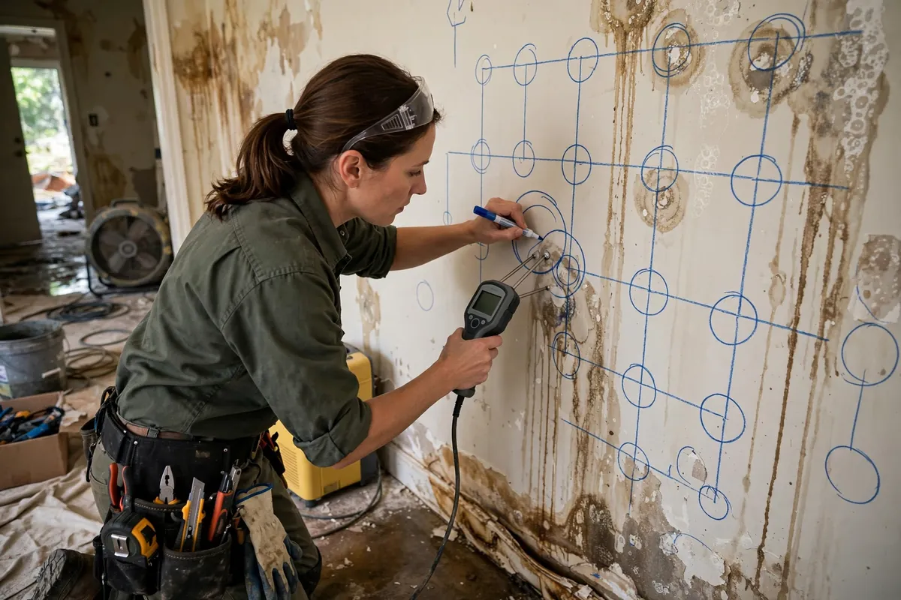

Moisture Mapping Inspection in Hollywood, FL
Water doesn't respect the boundaries of the room it started in. It wicks up drywall, runs along framing, hides beneath flooring, and settles into insulation — all while the surface looks merely damp. Moisture mapping is the detective work that finds every bit of it: thermal imaging and meter readings taken across a grid, plotted into a map that shows exactly what's wet, how wet, and where drying needs to focus.

Understanding Moisture Mapping Inspection in Hollywood
The most expensive water damage is the kind nobody sees. A supply line leak inside a wall can soak the cavity for days while the painted surface shows only a faint discoloration. Floodwater creeps under tile and into subfloors. In each case, the visible damage is a fraction of the real footprint — and any drying plan built on visual inspection alone will miss the wettest areas, leaving them to feed mold growth and odors weeks later.
Mapping combines three tools: thermal cameras that reveal temperature differences hinting at hidden moisture, pinless meters that scan surfaces without damage, and pin meters that confirm readings inside materials. The results are drawn onto a simple floor sketch — wet zones, damp zones, dry baselines — so the drying equipment goes where the water actually is instead of where it looks like it should be. In Hollywood's humidity, where ambient moisture already complicates drying, this precision keeps the job honest.
How We Handle the Job
Mapping starts with a walkthrough to understand the source and history of the loss, then a thermal scan of suspect areas — walls, ceilings, floors around the origin point. Meter readings follow on a grid pattern, recorded material by material, with dry reference readings taken from unaffected areas for comparison. Everything lands on the sketch: the full wet boundary, the worst readings, and the materials involved. That map becomes the drying plan and the baseline every later reading is measured against.
We walk you through the map so you can see the real extent of the loss — most homeowners are surprised. If active work is needed beyond mapping, related services such as emergency water extraction, structural drying, or flood cleanup may be part of the same job, each guided by what the map revealed.
Local Response and Insurance Support
Searching for moisture mapping inspection near me usually means you need help without delay. We answer emergency calls around the clock. Documentation — photos and moisture readings — supports conversations with your insurance carrier when the loss is sudden and accidental. We do not decide coverage; we provide clear technical information about the work performed.
When to Call
Call if you have active water, wet materials that are not drying, odors after a leak, or a backup that may involve contaminated water. Early action in Hollywood’s climate is almost always less disruptive than waiting. For neighborhood-specific service, see our service areas. For the full list of capabilities, visit all services.
Frequently Asked Questions
Why isn't looking at the damage enough?
Because water hides. It travels inside wall cavities, under flooring, and into insulation while surfaces look only mildly damp. Meters and thermal imaging find moisture your eyes can't, and missing it is how mold and odors start weeks later.
Does thermal imaging see through walls?
It detects surface temperature differences that suggest hidden moisture — a cold patch on a warm wall, for example. Meters then confirm whether that patch is actually wet. The two tools work as a pair.
Will moisture testing damage my walls or floors?
Pinless meters don't touch the surface at all. Pin meters leave tiny pinholes, usually in inconspicuous spots. Either way, the minor marks are far cheaper than the damage hidden moisture causes.
How often do you take readings during a job?
The mapping pass establishes the baseline, and readings are repeated as drying progresses — typically daily — until every material verifies at its dry standard. The map is what proves the job is actually finished.